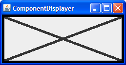
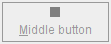

Preguntas y Ejercicios: Realización de Pintado Personalizado
Preguntas
1. ¿Qué método definido por JComponent pinta el interior de un componente?
2. ¿Cuál de los trozos de código siguiente pintan un rectángulo (relleno o no) que sea de 100x100 pixels?
a. g.fillRect(x, y, 100, 100)
b. g.fillRect(x, y, 99, 99)
c. g.drawRect(x, y, 100, 100)
d. b y c
e. a y c
3. ¿Qué código usaría para hacer que un componente realize la próxima operación de pintado usando el color de fondo al 50% de transparencia?
Ejercicios
1. Usando un borde estándar y un pintado de componente personalizado, implemente un componente que tiene un tamaño preferido de 250x100, es opaco por defecto, tiene un borde negro de 5 pixel, y pinta una "X" (usando líneas de 5 píxeles de grosor) en el color de primer plano, como se muestra en la figura siguiente.

2. Implemente un icono que es de 10x10 pixels y pinte un rectángulo sólido que rellene el área de 10x10. Si el
componente del icono está habilitado, el rectángulo será rojo, si está deshabilitado, gris. Haga una copia de
ButtonDemo.java que usa su Icon personalizado para el botón del medio, en vez de
mostrar middle.gif. Las fotos siguientes muestran como debería verse el icono.
|
|
 |
3. Implemente un borde que pinte una franja roja de 15 píxeles de alto en toda la parte superior de su
componente. Compruebe este borde substituyéndolo por el borde del componente que creó en el ejercicio 1. El
resultado debería vers como la figura siguiente.

Compruebe sus respuestas.